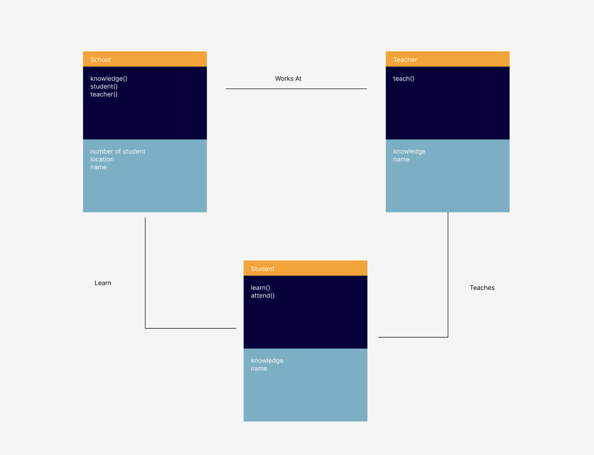

UML Diagram
My Process
I started by setting up the canvas and creating a main School object to control the system. Then I used object-oriented programming to make separate classes for the teacher and the students, so each one has its own properties and behaviors. I programmed the teacher to teach students within a certain range, which slowly increases their knowledge. The students move around the canvas on their own, and their color changes as they learn more. I also added interaction so that when I click on the canvas, a new student is added.My System